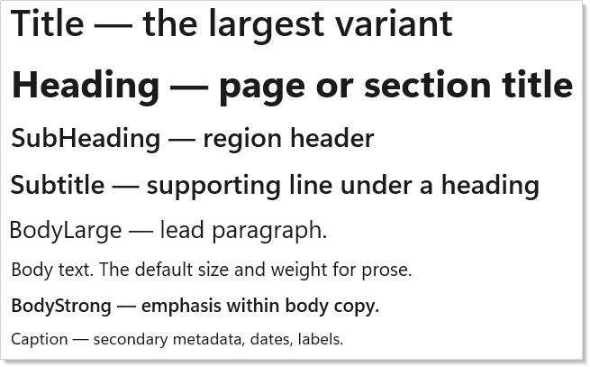
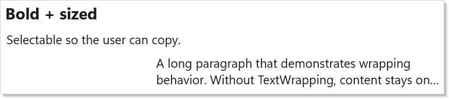
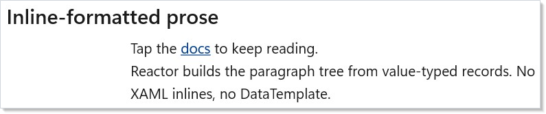
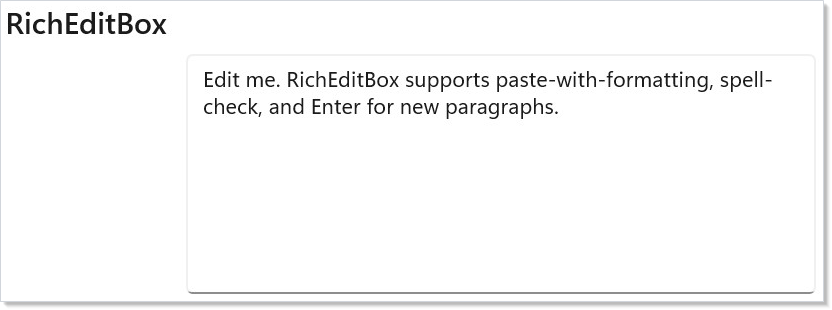
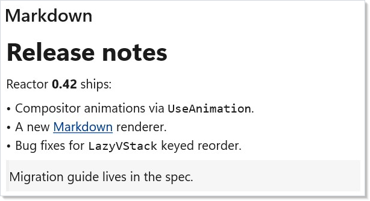
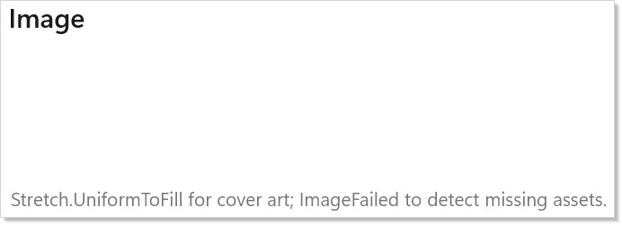
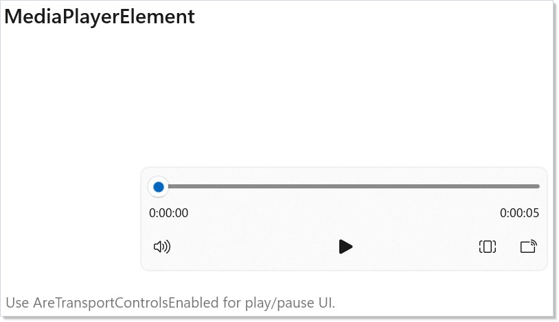
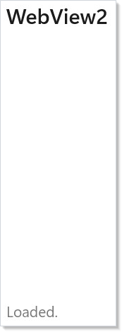
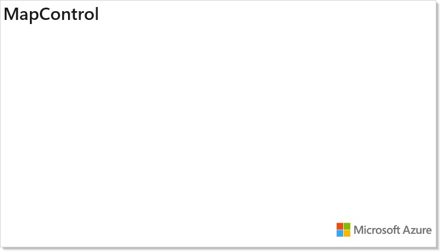

WinUI reference: For the full property surface and design guidance, see Text Controls.
Text and media controls are the display, rich-text, and media half of the Microsoft.UI.Reactor (Reactor)
catalog: surfaces that show content the user is reading, watching, or
inspecting, plus RichEditBox for rich-text editing. Most of them are thin wrappers over the
WinUI text and media surface, so the modifier names and accessibility
behavior match what a WinUI developer already knows. The two outliers are
Markdown(string) — a Reactor-original
renderer that parses GFM-style Markdown into the same element tree the
rest of your UI uses, no WebView round trip — and the semantic text
variants Heading / SubHeading,
which preset typography so that accessibility
tooling can infer document outline without manually setting
AutomationProperties. The trade-off the catalog makes here is bias
toward composition: rich layouts come from many small text elements in a
VStack, not from one giant RichTextBlock carrying
manually-tuned Inline records. Skim the modifier tables before the
prose, then jump to the control you need.
Text and Media¶
This page covers display text, inline rich text, rich-text editing, and media controls in
Reactor. For single-line input controls (TextBox, PasswordBox),
see Forms. For data-bound collections, see
Collections.
Text variants¶
Title(string) // WinUI title text style, ~28pt
Heading(string) // semantic heading, ~28pt
SubHeading(string) // sub-section header, ~20pt
Subtitle(string) // supporting line under a heading
BodyLarge(string) // lead paragraph
TextBlock(string) // body prose
BodyStrong(string) // body prose, semibold
Caption(string) // ~12pt metadata text
class TextVariantsDemo : Component
{
public override Element Render() => VStack(8,
Title("Title — the largest variant"),
Heading("Heading — page or section title"),
SubHeading("SubHeading — region header"),
Subtitle("Subtitle — supporting line under a heading"),
BodyLarge("BodyLarge — lead paragraph."),
TextBlock("Body text. The default size and weight for prose."),
BodyStrong("BodyStrong — emphasis within body copy."),
Caption("Caption — secondary metadata, dates, labels.")
).Padding(24);
}

Heading, SubHeading, and Caption return TextBlockElement
with preset text sizing; Heading and SubHeading also set heading
automation levels.
They are the right tool for document outline — screen readers and the
accessibility scanner treat them as hierarchical
landmarks, where a bare TextBlock styled with .FontSize(24).Bold() is
just visually large. Reach for the variants first; reach for the
modifiers on TextBlock only when the position in the outline doesn't
match the visual weight you want.
| Factory | Default size | Use when |
|---|---|---|
Title |
~28pt, semibold | WinUI title-ramp text without heading semantics. |
Heading |
~28pt, bold | One per page — the semantic document title. |
SubHeading |
~20pt, semibold | Section header inside a long page. |
Subtitle |
~20pt, regular | Supporting line directly under a heading. |
BodyLarge |
~18pt | Lead paragraph or callout prose. |
TextBlock |
Body | Paragraphs, labels, inline help. |
BodyStrong |
Body, semibold | Emphasis inside body copy without a size jump. |
Caption |
~12pt | Timestamps, metadata, helper text under a field. |
WinUI design page: Typography in Windows 11.
TextBlock modifiers¶
class TextBlockModifiersDemo : Component
{
public override Element Render() => VStack(8,
TextBlock("Bold + sized").Bold().FontSize(18),
TextBlock("Selectable so the user can copy.").IsTextSelectionEnabled(),
TextBlock(
"A long paragraph that demonstrates wrapping behavior. " +
"Without TextWrapping, content stays on one line and is " +
"clipped or scrolls. With TextWrapping.Wrap, the block " +
"flows across multiple lines inside its width.")
.TextWrapping()
.MaxLines(2)
.TextTrimming(Microsoft.UI.Xaml.TextTrimming.WordEllipsis)
.Width(320)
).Padding(24);
}

The fluents you reach for most often:
| Fluent | Effect |
|---|---|
.Bold() / .SemiBold() |
Sets FontWeight. Use Heading instead if it's a section title. |
.FontSize(double) |
Override the variant default. |
.FontFamily(string) |
Family name or Microsoft.UI.Xaml.Media.FontFamily. |
.TextWrapping() |
Default is no-wrap; call this to flow across lines. |
.MaxLines(int) |
Caps the visible line count — pairs with TextTrimming. |
.TextTrimming(mode) |
CharacterEllipsis / WordEllipsis / Clip / None. |
.TextAlignment(alignment) |
Left / Right / Center / Justify. |
.LineHeight(double) |
Override the line-box height (useful for dense lists). |
.IsTextSelectionEnabled() |
Lets the user select and copy the text. |
.CharacterSpacing(int) |
Hundredths of an em — 30 ≈ 0.3em tracking. |
Caveat:
TextBlockhas a fast-path renderer that activates only when you set theTextvia the factory string overload (TextBlock("…")). The moment you switch to inlines viaRichTextBlock, changeCharacterSpacingto a non-zero value, or setTextTrimmingtoClip, layout falls back to the slow path and CPU cost per measure roughly doubles. For thousand-row lists this matters; for static prose it does not. The WinUI debug propertyIsTextPerformanceVisualizationEnabledhighlights fast-path text in green — turn it on when profiling a scroll-heavy screen and demote any controls that aren't green to plainTextBlockwith modifiers.
RichTextBlock¶
class RichTextDemo : Component
{
public override Element Render() => VStack(8,
SubHeading("Inline-formatted prose"),
RichTextBlock([
Paragraph(
Run("Tap the "),
Hyperlink("docs",
new Uri("https://learn.microsoft.com/windows/apps/")),
Run(" to keep reading.")),
Paragraph(
Run("Reactor builds the paragraph tree from value-typed " +
"records. No XAML inlines, no DataTemplate."))
]).LineHeight(22).Width(420)
).Padding(24);
}

RichTextBlock is for paragraphs that mix runs and inline elements —
hyperlinks, mid-sentence bolds, color swaps. Use it sparingly: a list of
fields lives better in Forms, and a multi-screen article
lives better in Markdown(string).
RichTextBlock is the right tool when the structure is dynamic (a chat
message with @-mentions, a search result with bolded query terms)
because you build the Paragraph[] from data per render.
| Helper | Use |
|---|---|
Paragraph(params RichTextInline[]) |
A paragraph; one per visual break. |
Run(string text) |
A plain text fragment. |
Hyperlink(string text, Uri target) |
Inline link with a navigate target. |
Hyperlink(string text, Action onClick) |
Clickable inline fragment — fires the delegate and suppresses platform navigation. Use to make a single rich-text run interactive (open an editor, dispatch a command) without escaping to a hosted native subtree. |
InlineUI(Element child) |
Embeds a live control (chart, slider, button) mid-paragraph via InlineUIContainer. |
Modifiers — .MaxLines, .LineHeight, .TextAlignment,
.TextTrimming, .CharacterSpacing — match TextBlock. Inline runs do
not get the fast-path renderer, so prefer plain TextBlock for static
text.
Caveat: Embedding live controls with
InlineUI(...)and then mutating aRunin the same paragraph used to scroll the surroundingScrollViewer/ScrollViewto the top: WinUI's text engine re-measures the paragraph from scratch and the embedded elements contribute zero height for one layout pass, so the scroll host silently clamps its offset down and never restores it (issue487). Reactor now handles this for you —
ScrollViewer(RichTextBlock(...))¶preserves the user's scroll offset across inline-UI mutations automatically, with no extra API or per-app workaround. Just wrap the
RichTextBlockin a scroll host as usual.
WinUI design page: Rich text block.
RichEditBox¶
class RichEditDemo : Component
{
public override Element Render()
{
var (text, setText) = UseState(
"Edit me. RichEditBox supports paste-with-formatting, " +
"spell-check, and Enter for new paragraphs.");
return VStack(8,
SubHeading("RichEditBox"),
RichEditBox(text, setText)
.AcceptsReturn()
.IsSpellCheckEnabled()
.TextWrapping()
.Height(160).Width(420)
).Padding(24);
}
}

RichEditBox is the editable counterpart of RichTextBlock — multi-line
text with paste-from-formatted-source, spell-check, IME composition, and
selection. The change handler fires with the plain text content; for
formatted output you read RichEditBox.Document through .Set(...) and
serialize the text range yourself. Single-line text input belongs in
TextBox, not here.
| Fluent | Effect |
|---|---|
.AcceptsReturn(bool) |
Enter starts a new paragraph instead of submitting. |
.TextWrapping() |
Wrap (default) or NoWrap. |
.MaxLength(int) |
Cap input length. |
.IsSpellCheckEnabled(bool) |
Toggle squiggle underline. |
.SelectionHighlightColor(brush) |
Override selection background. |
.TextChanged(Action<string>) |
Subscribe outside the constructor argument. |
WinUI design page: Rich edit box.
Markdown (Reactor-original)¶
Package note.
Markdown(...)ships in the optionalMicrosoft.UI.Reactor.Advancedpackage (spec 062 §7). Add a<PackageReference Include="Microsoft.UI.Reactor.Advanced" Version="0.1.0-preview.14" />and import its factories alongside the core ones:using static Microsoft.UI.Reactor.Advanced.Factories;. Both overloads return the baseElement, andMarkdownOptionsstays inMicrosoft.UI.Reactor.Markdown— so the options overload also needsusing Microsoft.UI.Reactor.Markdown;.
class MarkdownDemo : Component
{
public override Element Render()
{
const string source =
"# Release notes\n\n" +
"Reactor **0.42** ships:\n\n" +
"- Compositor animations via `UseAnimation`.\n" +
"- A new [Markdown](https://example.com) renderer.\n" +
"- Bug fixes for `LazyVStack` keyed reorder.\n\n" +
"> Migration guide lives in the spec.\n";
return VStack(8,
SubHeading("Markdown"),
Markdown(source)
).Padding(24).Width(440);
}
}

Markdown is the largest Reactor-original control on this page. It
parses GitHub-flavored Markdown with the embedded md4c parser and
emits a Reactor element tree: headings become TextBlock with the
heading variant, list items become HStacks, links become inline
hyperlinks, code spans become monospace TextBlock. No WebView, no HTML
round-trip — the output composes with every other modifier on this page
(.Padding, .Width, .TextWrapping).
The trade-off vs. WebView2 is fidelity: Markdown does not
support arbitrary HTML, embedded <script>, or CSS. It supports paragraphs,
headings (h1–h6), lists (bullet, ordered, nested), inline code, fenced code
blocks with optional language, links, images, bold, italic, strikethrough,
blockquotes, hard line breaks, and tables. Anything beyond that — embedded
videos, custom layouts, syntax-highlighted code with theming — falls back to
WebView2 with an HTML-rendered fallback or a separate viewer.
Reach for it for release notes, in-app help, conversational AI output, user-authored long-form prose (commit descriptions, knowledge-base articles), or any surface where the source is plain text and a thin formatting layer is what the reader needs.
| Use Markdown when | Use RichTextBlock when |
|---|---|
| Source is authored as a string (LLM output, README, user comment) | Inline structure is computed from typed data |
| You need lists, code blocks, blockquotes | Plain paragraphs with mid-line formatting suffice |
| The full GFM subset is acceptable | You need arbitrary Inline element types |
Round-trip from .md files |
Round-trip from a RichTextParagraph[] schema |
No WinUI parallel: WinUI ships a MarkdownTextBlock in the Community
Toolkit, but the API surface and behavior differ. The Reactor factory is
the canonical reference for this control.
Image¶
class ImageDemo : Component
{
public override Element Render() => VStack(8,
SubHeading("Image"),
// Resource Uri — ms-appx:// for packaged assets, file:// for disk,
// https:// for remote.
Image("ms-appx:///Assets/StoreLogo.png")
.AutomationName("Reactor app logo")
.Set(img => img.Stretch = Microsoft.UI.Xaml.Media.Stretch.UniformToFill)
.Width(96).Height(96),
TextBlock("Stretch.UniformToFill for cover art; " +
"ImageFailed to detect missing assets.").Opacity(0.6)
).Padding(24);
}

Image accepts the standard WinUI URI schemes — ms-appx:/// for
assets packaged with the app, ms-appdata:/// for app-data files,
file:/// for arbitrary disk paths, and http(s):// for remote
sources. The factory delegates source decoding to the WinUI
BitmapImage — same caching, same DPI awareness.
| Fluent | Effect |
|---|---|
.Width(double) / .Height(double) |
Layout size. Without one of these the image takes its natural pixel size. |
.NineGrid(Thickness) |
Stretch the middle, preserve the borders (chrome-style backgrounds). |
.Set(img => img.Stretch = ...) |
Stretch mode: None / Uniform (default) / UniformToFill / Fill. |
.ImageOpened(Action) |
Decode succeeded. |
.ImageFailed(Action<string>) |
Decode failed — fire to swap in a fallback. |
Don't: decode large remote images on the UI thread by setting
Sourceto a full-sizehttp://URL inside a tight list-item render. The WinUI decoder spawns work off the UI thread, but the network fetch still blocks the visual tree from drawing the row until the bytes arrive. For lazy-loaded media inside a virtualized list, route through aUseResourcethat fetches a downscaled blob and only renderImageoncePendingis resolved.
WinUI design page: Images and image brushes.
MediaPlayerElement¶
class MediaPlayerDemo : Component
{
public override Element Render() => VStack(8,
SubHeading("MediaPlayerElement"),
MediaPlayerElement(
"https://interactive-examples.mdn.mozilla.net/media/cc0-videos/flower.mp4")
.Width(420).Height(240)
.Set(m =>
{
m.AreTransportControlsEnabled = true;
m.AutoPlay = false;
}),
TextBlock("Use AreTransportControlsEnabled for play/pause UI.")
.Opacity(0.6)
).Padding(24);
}

MediaPlayerElement wraps the WinUI MediaPlayerElement, which itself
hosts a MediaPlayer that drives audio and video playback. The factory
accepts a string URL for the common case; for stream sources, set the
player through .Set(m => m.MediaPlayer.Source = ...).
| Knob | Set via |
|---|---|
AreTransportControlsEnabled |
.Set(m => m.AreTransportControlsEnabled = true) |
AutoPlay |
.Set(m => m.AutoPlay = false) |
IsFullWindow |
.Set(m => m.IsFullWindow = true) |
MediaOpened / MediaEnded / MediaFailed |
Dedicated fluent overloads |
Don't: mount and unmount
MediaPlayerElementon every render to drive playback. The WinUI control owns an underlyingMediaPlayerthat re-initializes hardware decoders on each remount; thrash kills playback smoothness. Render the element once with a stable position in the tree and driveSource/ play state through a hook (UseRefholding the player), not through unmounts.
WinUI design page: Media player.
WebView2¶
class WebViewDemo : Component
{
public override Element Render()
{
var (loaded, setLoaded) = UseState(false);
return VStack(8,
SubHeading("WebView2"),
WebView2(new Uri("about:blank"))
.NavigationCompleted(_ => setLoaded(true))
.Width(420).Height(240),
TextBlock(loaded ? "Loaded." : "Loading…").Opacity(0.6)
).Padding(24);
}
}

WebView2 embeds a Chromium-based browser. Use it for content that
genuinely needs HTML/CSS/JavaScript — a markdown page does not, an
embedded Office viewer does. The control raises lifecycle events for
navigation and exposes a WebMessageReceived channel for postMessage
interop.
| Event fluent | Fires when |
|---|---|
.NavigationStarting(Action<Uri>) |
A navigation begins — cancel via .Set. |
.NavigationCompleted(Action<Uri>) |
Page finished loading. |
.WebMessageReceived(Action<string>) |
Page called window.chrome.webview.postMessage(...). |
.CoreWebView2Initialized(Action) |
The underlying CoreWebView2 is ready — configure it via .Set(w => w.CoreWebView2....). |
Don't: lay out
WebView2inside an indeterminate-sized parent like anHStackwithout explicit dimensions. WebView2 measures to its content, which for a real web page is the viewport — without bounds it grows to fill the available size and triggers a layout oscillation when the page reflows. Always pin.Widthand.Height(or place the control in a fixed-sizeGridcell).
WinUI design page: WebView2.
MapControl¶
class MapControlDemo : Component
{
public override Element Render() => VStack(8,
SubHeading("MapControl"),
// Token blank — replace with a real Bing Maps key for tile fetch.
// Without a token the control renders the grid background only.
MapControl(mapServiceToken: null, zoomLevel: 4)
.Width(420).Height(240)
).Padding(24);
}

MapControl wraps Microsoft.UI.Xaml.Controls.Maps.MapControl. The
service token comes from the Bing Maps developer portal — without it,
the grid background renders but no tiles fetch. For full customization
(pushpins, overlays, scenes), reach through .Set(m => ...) to the
underlying control; the Reactor surface today exposes the factory
arguments and direct passthrough.
Don't: ship
MapControlto an offline-tolerant app without a fallback. Tile fetch failures don't throw — the control just shows the grid. Subscribe to the underlyingMapControl.MapServiceErrorOccurredthrough.Setand swap in anImageof a static map (or a "map unavailable" panel) when offline.
WinUI design page: Map control (Windows App SDK).
Reference¶
| Control | Factory | Reactor-original? | WinUI doc |
|---|---|---|---|
TextBlock |
TextBlock(string) |
No | Text block |
Title / Heading / SubHeading / Subtitle / BodyLarge / BodyStrong / Caption |
Heading(string) etc. |
Variant presets | — |
RichTextBlock |
RichTextBlock(string) or RichTextBlock(RichTextParagraph[]) |
No | Rich text block |
RichEditBox |
RichEditBox(text, onChanged) |
No | Rich edit box |
Markdown |
Markdown(string) — Microsoft.UI.Reactor.Advanced |
Yes | — |
Image |
Image(string) |
No | Images and image brushes |
MediaPlayerElement |
MediaPlayerElement(string?) |
No | Media player |
WebView2 |
WebView2(Uri?) |
No | WebView2 |
MapControl |
MapControl(token, zoom) |
No | Map control |
InkCanvas |
Not wrapped — see gap analysis | — | Ink controls |
Patterns¶
Long-form prose with Markdown¶
The release-notes / changelog pattern: parse a string of GFM into the
element tree, then style the container — not the inner elements. Pad,
constrain width to ~640 logical pixels for readability, and let the
Markdown renderer hand back the hierarchy. Wrap the call in a
UseMemo keyed on the source string when the renderer is
inside a frequently-rendered parent; the parser is cheap but allocates,
and memoization keeps GC pressure flat:
class LongFormProseDemo : Component
{
const string Source = "# Release notes\n\nShipped **today**.\n";
public override Element Render()
{
// The parser is cheap but allocates; memoize on the source string so a
// frequently-rendered parent doesn't re-parse unchanged prose.
var rendered = UseMemo(() => Markdown(Source), Source);
return Border(rendered).Padding(20).Width(640);
}
}
This is the same shape as the recipes/master-detail
content pane and the chat sample
message bubble.
Inline data display with RichTextBlock¶
When a list-row needs Name (status) — 3 hours ago with the status
bold and the timestamp dim, build a RichTextBlock per row out of the
typed data. Keep the paragraph construction inline in the row
Component so it re-runs only when the row's data
changes; RichTextBlock is not the bottleneck for moderate row counts
but the inline-element allocation can show up in profiles when a
LazyVStack scrolls thousands of rows at 60fps.
Common Mistakes¶
Using TextBlock for everything¶
// Don't:
VStack(8,
TextBlock("Settings").FontSize(28).Bold(),
TextBlock("Display").FontSize(20).Bold(),
TextBlock("Adjust resolution and orientation.")
)
class TextVariantsDemo : Component
{
public override Element Render() => VStack(8,
Title("Title — the largest variant"),
Heading("Heading — page or section title"),
SubHeading("SubHeading — region header"),
Subtitle("Subtitle — supporting line under a heading"),
BodyLarge("BodyLarge — lead paragraph."),
TextBlock("Body text. The default size and weight for prose."),
BodyStrong("BodyStrong — emphasis within body copy."),
Caption("Caption — secondary metadata, dates, labels.")
).Padding(24);
}
The "don't" form ships visual hierarchy but no semantic hierarchy —
the accessibility scanner reports no headings and screen-reader users
get no document outline. The correct form uses the Heading /
SubHeading / TextBlock factories so accessibility.md
landmark detection works.
Rendering Markdown inside a tight scroll loop without memoizing¶
// Don't:
LazyVStack<Message>(messages, m => m.Id, (m, i) =>
Markdown(m.Body)) // re-parses on every scroll recycle
class MarkdownRowsDemo : Component
{
public override Element Render()
{
var messages = new List<Message>
{
new("m1", "**First** message."),
new("m2", "Second message with `code`."),
};
// Memo(key, factory) — the cross-recycle row cache. A scroll recycle
// re-asks for the key and gets the same element instance back, so the
// parser never runs again for an unchanged row.
//
// Key on the row identity *and* the body, not the body alone: this is a
// per-row cache, and two messages that happen to share text would
// otherwise collide on one entry. Including Id also reparses correctly
// when a single message's body is edited.
return LazyVStack<Message>(messages, m => m.Id, (m, i) =>
Memo((m.Id, m.Body), () => Markdown(m.Body))).Height(200);
}
}
Markdown parsing is fast but not free — at 60fps × hundreds of visible
rows × every state change, parser allocation shows up in GC. Use the
keyed Memo(key, factory)
overload here, not Memo(ctx => …, deps). They share a name but the
compiler picks by argument shape, and only the keyed form owns the
cross-recycle row cache: a scroll recycle re-asks for the key and gets the
same element instance back, so the parser never runs again for an unchanged
row. Memo(ctx => …, deps) only skips work when the parent re-renders,
which is not what happens on a pure scroll.
Tips¶
Pick the smallest control that does the job. TextBlock >
RichTextBlock > Markdown > WebView2 in increasing layout cost.
Promote only when the lower tier can't represent the structure.
Use .IsTextSelectionEnabled() on any text the user might want to copy. Error
messages, IDs, paths, log lines, command output — all of them are more
useful when the user can drag-select and Ctrl+C. The cost is one
modifier per TextBlock.
Pin dimensions on media controls. Image, MediaPlayerElement,
WebView2, and MapControl all default to "fill available space" or
"natural content size", which interacts badly with VStack/HStack
auto-layout. Set .Width and .Height (or place them in a fixed
Grid cell).
Markdown is the right choice for LLM output. Treat AI-generated
text as a markdown stream — parse it, render it, theme the container.
The renderer composes with the rest of the catalog and stays accessible.
Next Steps¶
- Forms and Input — Previous: editable input controls and the validation system.
- Status and Info — Next:
Progress, InfoBar, badges, and non-interactive feedback. - Styling — Theme tokens and font fluents applied across every text element.
- Accessibility — How
Heading/SubHeadingmap to document landmarks. - Markdown samples — End-to-end LLM-output rendering in the chat sample.